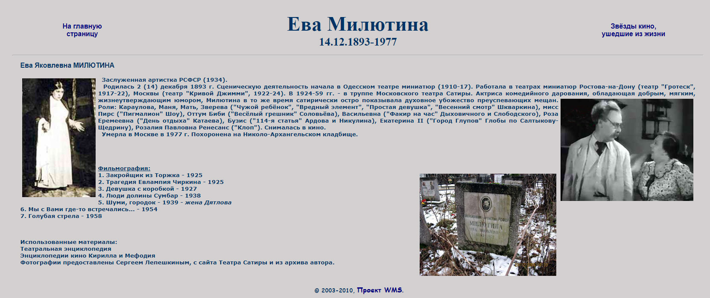

|
My Aunt, Yeva Milyutina
Ева Милютина
Here's another Russian webpage concerning my mom's sister, my Aunt Yeva, that I've saved in case it ever disappears from the web.
You can click on the article to toggle between Russian and English. I'm not sure why the translations of the second and third movies
in the list came up blank, but the second one is "The Tragedy of Evlampiya Chirkina" and the third is "Girl With the Hat Box".

|
|